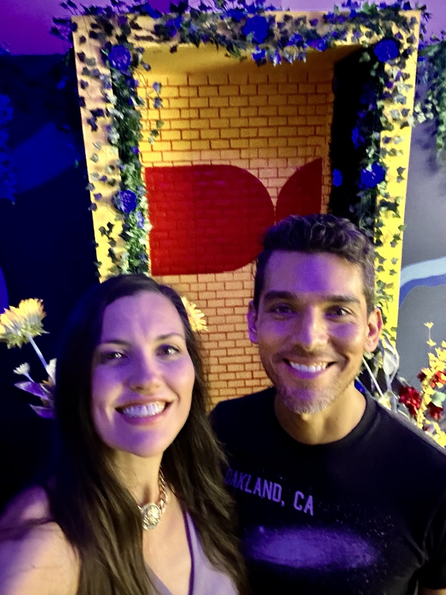
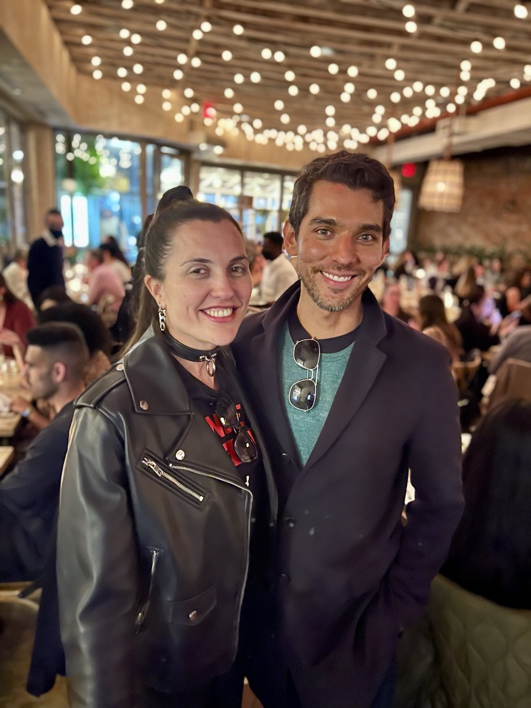
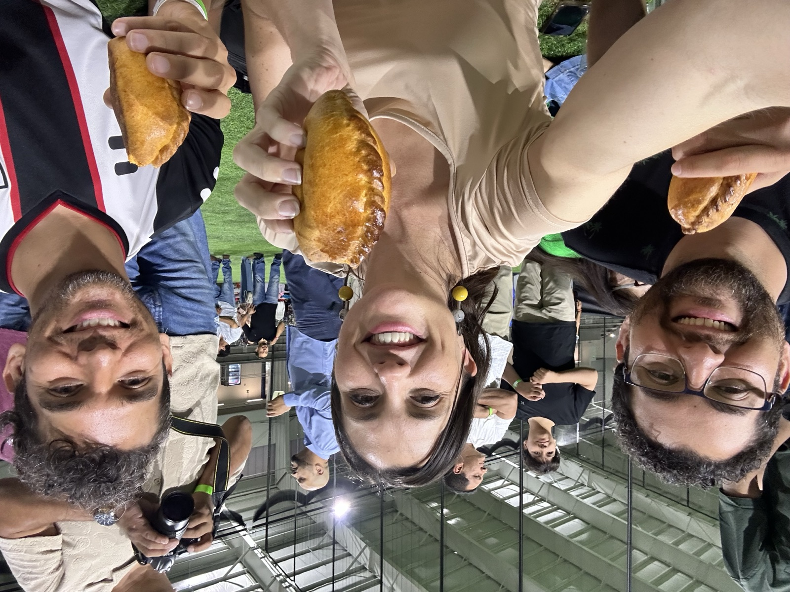
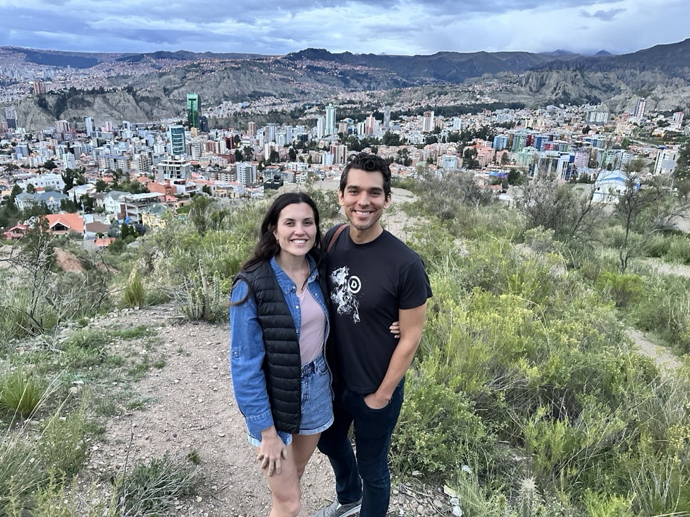
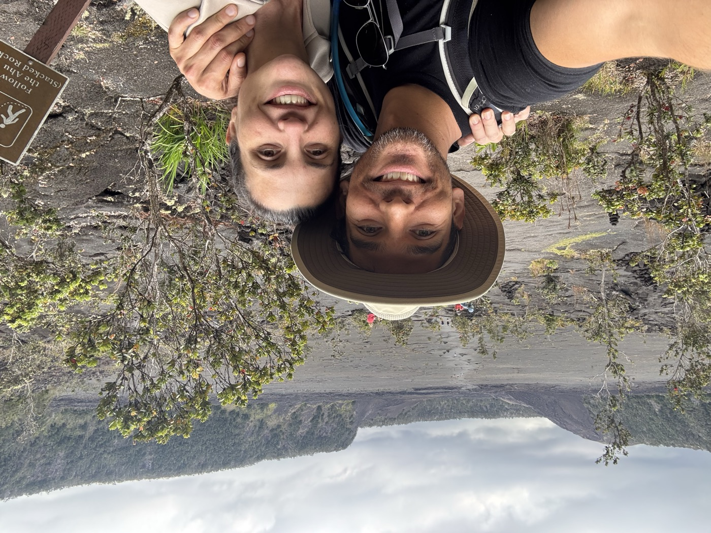
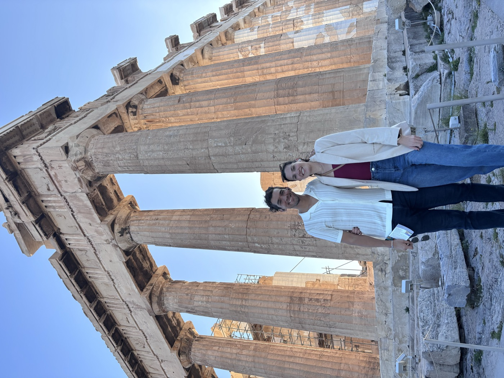

Our Love Story
How It All Began
Some love stories start with a spark. Ours started with a melting ice cream cone.
Morgan and Juanma's first date was on July 3, 2024, in Washington, DC, one of the hottest days of the year. They got ice cream and spent the first half of it laughing as the cones melted down their hands faster than they could keep up.
Afterward, Juanma took Morgan on a small detour through DC history, to a gem most people walk right past: Abraham Lincoln's hitching post on New York Avenue. They talked about everything: family, travel, and the forbidden dinner-table topics of politics and religion.


Going Steady
They began introducing each other to their worlds, starting with their music: Morgan's house and techno, Juanma's heavy metal and jazz. They made it official on a trip to New York City, where Juanma tagged along with Morgan and her friends to his first hard techno night. They've rarely been apart since.

Adventures Together
Morgan and Juanma love being out in the world together. That first trip to New York grew into a full passport: soaking up the sun in Puerto Rico, riding the world's highest cable cars over La Paz, dancing in Ibiza, wandering the canals of Amsterdam, and chasing lava and sea turtles on the Big Island of Hawaii. Along the way they've jumped out of an airplane, ventured deep into caves, and gone snorkeling. If there's adventure on the menu, they'll order one to share.
Back home, Juanma has stepped into the role of dog dad to Morgan's greyhound, Auri, and he's a natural.


The Big Question
For their first anniversary, Juanma brought Morgan to Greece to run the Athens Marathon and, unbeknownst to her, to propose on the island of Hydra. When he got down on one knee, she said yes, and then had to help him back to his feet, his knees weak from the emotion and the previous day's twenty-six miles.
